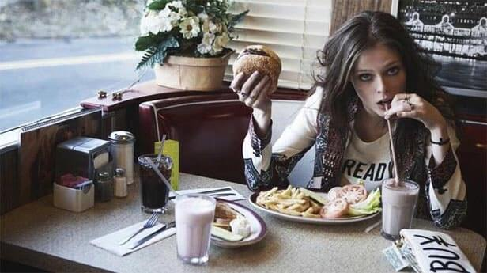
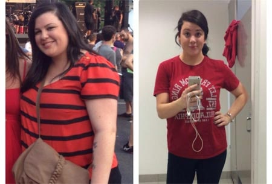
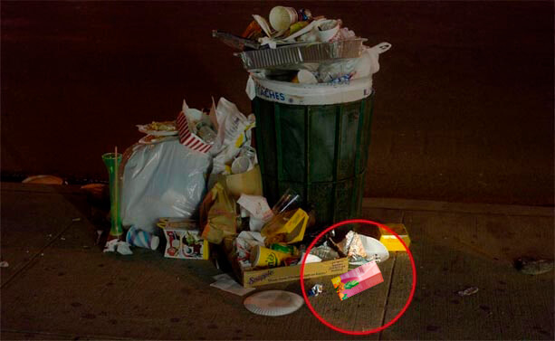
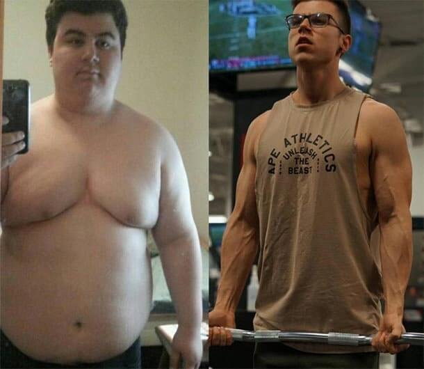

Sveiki visi! Džimis Kimelis su jumis.
Šiandien mes išgirsime istoriją, kuri stebina visomis prasmėmis - apie tai, kaip greitojo maisto įmonės savininkas pripratino lankytojus prie savo maisto ... per sulieknėjimą!
Mėsainius, picas ir kitus patiekalus valgė ir liesėjo absoliučiai visi, įskaitant Maiką, kuris ten dirbo porą metų. Valgydamas tik greitąjį maistą, Maikas, kaip ir kiti svečiai su antsvoriu, numetė kelis dešimčius kilogramų. Jie valgė ir lieknėjo, ir jų buvo daug. Kaip tai atsitiko, pats Maikas sutiko papasakoti tik diktofonu. Jo istorija iš pirmų lūpų.
Publikuota 2021
 Skandalinga
Skandalingaistorija
Greitojo maisto, dėl kurio žmonės praranda svorį, paslaptis atskleista
Sveiki visi, aš esu Maikas ir anksčiau aš atrodžiau taip. Už tris mėnesius dirbdamas greitajame maiste numečiau svorį. Nebėgiojau, sunkiai dirbau ištisomis dienomis ir nesilaikiau dietos. Aš dirbau su tais pačiais mėsainiais, kurie priverčia tave mesti svorį. Neseniai išėjau iš darbo ir noriu žmonėms papasakoti tiesą apie slaptą ingredientą, kurį mūsų šefas įmaišė į padažą, kad žmonės prarastų svorį ir vėl sugrįžtų.

Kai mūsų mieste buvo mažai turistų, greitasis maistas taip pat nebuvo populiarus. Po to pradėjo atsidaryti pirmieji taškai su spurgomis ir dešrainiais. Ir pasirodė, kad tai yra pelninga. Turistai labiau mėgsta greitąjį ir nesveiką maistą. Niekas nėra priklausomas nuo virtų morkų ir Briuselio kopūstų, tačiau valgo labai daug bulvyčių fri. Kodėl? Todėl, kad jie yra specialiai sukurti šiam tikslui.
Mėsainiai su slaptu ingridientu
Mano viršininkas anksčiau dirbo restorane ir gerai ruošė maistą. Ir taip pat nusprendė atidaryti savo verslą. Tačiau konkurencija buvo per didelė ir jo maistas netapo toks populiarus, kaip jis tikėjosi. Viršininkas paėmė didelį kreditą savo verslui ir įvairiais būdais bandė atgaivinti verslą. Pusmetį jis dirbo su nuostoliais, tik po to žmonės plūdo pas jį. Jis net nustojo susidoroti ir paėmė mane padėjėju.

Daugelis vietinių gyventojų yra apsėsti sveikatos - sporto ir tinkamos mitybos. Ir staiga pas mus pradėjo ateiti vis daugiau ir daugiau klientų. Ir tarp jų buvo ne tik stori vyrai, bet ir liekni vaikinai ir merginos iš fitneso. Mūsų įmonė išpopuliarėjo: apie ją rašoma tinklaraščiuose apie gatvės maistą, ją įtraukia į kelionių vadovus ir žemėlapius, tai pritraukė turistus.

Gatvės greitasis maistas tapo populiaresnis negu restoranas mišlenas
Kodėl staiga toks susidomėjimas? Greitasis maistas buvo eiliniausias. Bulvytės fri, įvairūs mėsainiai ir limonadai - be jokio ypatingumo. Išskyrus firminį padažą. Jo receptas buvo griežtai saugomas. Šefas gamino asmeniškai ir niekuo nepasitikėjo. Aš pats įsikibau sūrio mėsainių.
Jei aš nevalgiau jo ryte, tada visą dieną nebuvo nuotaikos ir jėgų. Aš išsigandau, kad į padažą įmaišoma kažko draudžiamo, kad žmonės taptų priklausomi nuo maisto. Nuolatinių klientų buvo vis daugiau. Žmonės pas mus vėl ir vėl atėjo, nes visi ... metė svorį. Tai tiesa.

Turėjau 25 kg antsvorio. Per tris darbo mėnesius juos visus numečiau. Nors valgiau beveik tik mėsainius ir bulvytes fri. Taip pat radau jėgų ir noro pradėti lankytis sporto salėje. Mūsų nuolatinis klientas treneris netgi padovanojo man abonementą ir sukūrė programą už nuolaida mūsų mėsainiuose. Tai buvo keista. Patys pažiūrėkite, kaip pasikeitė mūsų nuolatiniai klientai per porą mėnesių.

Aš išsigandau ir nunešiau padažą analizei į laboratoriją. Ir ji man šokiravo! Sudėtyje nebuvo nieko draudžiamo. Tik keistas prieskonių rinkinys iš natūralių ingredientų. Bet paprastas prieskonis negalėjo suteikti jėgų, pagerinti virškinimą ir padėti numesti svorį. Aš rimtai. Pažiūrėkite, kaip atrodžiau prieš patekdamas į greitąjį maistą ir dabar. Aš valgiau darbe ir supratau, kad lieknėju ir atrodau daug geriau. Buvau apsėstas ir nusprendžiau bet kokia kaina sužinoti, kodėl žmonės meta svorį. Bet nieko neradau. Daržovės ir mėsa buvo atvežti švieži iš ūkio, o bandeles kepė vietinė konditerija. Ir išprotėjau dėl to. Antrasis greitasis maistas atsidarė. Eilė prie prekystalio net ir darbo dieną nusidriekė per visą gatvę, kainos kilo, tačiau minios nemažėjo. Aš jau pradėjau prisigalvoti beprotiškas idėjas, kai staiga man paaiškėjo tiesa.

Kodėl visi liesėja valgydami mėsainius?
Kai viršininkui nepasiseko su verslu ir jis rizikavo prarasti viską, įskaitant įkeistus namus, jis padarė genialiai. Jis sugalvojo greitojo maisto receptą, kuris priverčia žmones mesti svorį. Kaip jis tai padarė? Nupirko populiarų natūralų preparatą , kurį geria suliesėjimui aktoriai, dainininkai, politikai, gydytojai, mitybos specialistai, modeliai ir kt. ir pradėjo maišyti jį į padažą. Ir nuleido kainas. Beprotybė. Jis dirbo nuostolingai ir tikėjosi, kad atsiras žmonių. Jie atėjo! Pradėjo pirkti mėsainius ir įvyko "stebuklas". Jie valgė ir liesėjo.

Kaip aš tai sužinojau? Netyčia pamačiau pakuotę, ištyrinėjau ją skersai ir išilgai, palyginau su laboratorine padažo analize. Ir viskas sustojo į savo vietas. Aš papasakojau viršininkui, kad žinau apie ingredientą, ir paprašiau pakelti darbo užmokestį. Viršininkas atsisakė, teigdamas, kad niekas manimi nepatikės ir kad turėčiau džiaugtis, jog iš storo spuoguoto vaikino paverčiau lieknu gražuoliu. Man buvo apmaudu. Pastaruoju metu dirbau be savaitgalių ir vis tiek uždirbau labai mažai.

Aš išėjau iš darbo. O dabar noriu papasokoti visiems, kurie valgė liekninančius mėsainius. Jūs liesėjote dėl , kurį įmaišė į padažą. Jums nebereikia permokėti ir gadinti skrandį greituoju maistu. Jūs be problemų galite nupirkti savarankiškai. Tuo labiau, kad gamintojas dažnai turi nuolaidų ir dovanų už pirkimą. turi vieną šalutinį poveikį - norisi valgyti mažiau. Aš prisimenu savo mėgstamiausius klientus, kurie užsuko už mėsainį, bet negalėjo jo suvalgyti iki galo ir vos nespringo. Nes jie bijojo, kad jei nesuvalgys, tad vėl priaugs svorio. Dabar aš tikiuosi, kad visi sužinos tiesą - numesti svorį galite pridėdami "slaptą" ingridientą į bet kokį maistą!
Oho, tai naujiena.
O aš kažką girdėjau iš savo brolio apie šiuos mėsainius, bet netikėjau.
Aš pati numečiau svorį dėl mėsainio su mėsa. Tačiau iš tikrųjų yra labai brangu ir ne tiek skanu, kiek norėtųsi. Bet dabar aš žinau paslaptį ir tiesiog nusipirksiu ir valgysiu ko noriu ir įgausiu fizinę formą, apie kurią visada svajojau.
O man atrodo jūs dabar puikiai atrodote, nebereikia liesėti.
Kur nusipirkti ? Labai skubiai!
Nusipirkti nėra sudėtinga, visi užsisakykite tiesiog pas gamintoją.
Aš esu viena iš pirmųjų, kurie priprato prie liekninančio greitojo maisto. Aš iš tikrųjų dėl jo numečiau svorį ir išvaliau savo organizmą. Pastebėjau, kad mano nuotaika geresnė, gerai miegau ir pradėjau daugiau judėti. Aš nesigėdijausi ir nuėjau į sporto salę ir atradau savyje sugebėjimų, apie kuriuos anksčiau neįtariau. Taip aš ir pradėjau mesti svorį dar greičiau. Po to Maikas man papasakojo, kad padaže yra . Tik mažesniu kiekiu nei reikia. Aš nusipirkau šį preparatą ir normaliai praėjau gydymo kursą. Va mano rezultatai už metus.
puikus rezultatas!
taip pat reikia pabandyti šį preparatą.
natūralus ir efektyvus. Aš susižavėjau. Man jis iš tikrųjų padėjo! Ne tik numečiau 20 kg svorio, bet ir pradėjau užsiimti sportu, pati užsinorėjau. Dabar turiu tokią figūrą, apie kurią anksčiau net nesvajojau.